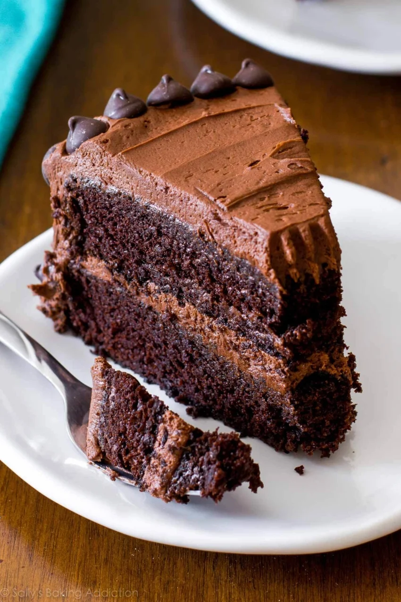

Tripe Chocolate Cake Recipe

Description
With a super moist crumb and fudgy, yet light texture, this chocolate cake recipe will soon be your favorite too. Top with chocolate buttercream and chocolate chips for 3x the chocolate flavor. you can also prepare this chocolate layer cake as a sheet cake, too.
No mixer required for the batter, simply whisk the dry ingredients into the dry ingredients (or vice versa, it doesn't make any difference), add the hot coffee, then whisk everything together. The cake batter is thin. Divide between 2 9-inch cake pans. You can easily stretch it to 3 or 4 8-inch or 9-inch cakes if needed. Or make a quarter sheet cake using a 9x13-inch cake pan.
Ingredients
Cake
- 1 and 3/4 cups (219g) all-purpose flour (spooned & leveled)
- 3/4 cup (62g) unsweetened natural cocoa powder
- 1 and 3/4 cups (350g) granulated sugar
- 2 teaspoons baking soda
- 1 teaspoon baking powder
- 1 teaspoon salt
- 2 teaspoons espresso powder (optional)
- 1/2 cup (120ml) vegetable oil (or canola oil or melted coconut oil)
- 2 large eggs, at room temperature
- 2 teaspoons pure vanilla extract
- 1 cup (240ml) buttermilk, at room temperature
- 1 cup (240ml) freshly brewed strong hot coffee (regular or decaf)
Chocolate Buttercream
- 1 and 1/4 cups (282g) unsalted butter, softened to room temperature
- 3 and 1/2 cups (420g) confectioners' sugar
- 3/4 cup (65g) unsweetened cocoa powder (natural or dutch process)
- 3-5 tablespoons (45-75ml) heavy cream (or half-and-half or milk), at room temperature
- 1/4 teaspoon salt
- 1 teaspoon pure vanilla extract
- optional for decoration: semi-sweet chocolate chips
Steps
- Preheat oven to 350°F (177°C). Grease two 9-inch cake pans, line with parchment paper rounds, then grease the parchment paper. Parchment paper helps the cakes seamlessly release from the pans.
- Make the cake: Whisk the flour, cocoa powder, sugar, baking soda, baking powder, salt, and espresso powder (if using) together in a large bowl. Set aside. Using a handheld or stand mixer fitted with a whisk attachment (or you can use a whisk) mix the oil, eggs, and vanilla together on medium-high speed until combined. Add the buttermilk and mix until combined. Pour the wet ingredients into the dry ingredients, add the hot water/coffee, and whisk or beat on low speed until the batter is completely combined. Batter is thin.
- Divide batter evenly between pans. Bake for 23-26 minutes or until a toothpick inserted in the center comes out clean. Baking times vary, so keep an eye on yours. The cakes are done when a toothpick inserted in the center comes out clean. (Note: Even if they're completely done, the cooled cakes may slightly sink in the center. Cocoa powder is simply not as structurally strong as all-purpose flour and can't hold up to all the moisture necessary to make a moist tasting chocolate cake.)
- Remove the cakes from the oven and set on a wire rack. Allow to cool completely in the pan.
- Make the buttercream: With a handheld or stand mixer fitted with a paddle attachment, beat the butter on medium speed until creamy—about 2 minutes. Add confectioners' sugar, cocoa powder, 3 tablespoons heavy cream, salt, and vanilla extract. Beat on low speed for 30 seconds, then increase to high speed and beat for 1 full minute. Do not over-whip. Add 1/4 cup more confectioners' sugar or cocoa powder if frosting is too thin or 1-2 more tablespoons of cream if frosting is too thick. Taste. Add another pinch of salt if desired.
- Assemble and frost: If cooled cakes are domed on top, use a large serrated knife to slice a thin layer off the tops to create a flat surface. This is called "leveling" the cakes. Discard or crumble over finished cake. Place 1 cake layer on your cake stand or serving plate. Evenly cover the top with frosting. Top with 2nd layer and spread remaining frosting all over the top and sides. Use an icing spatula and bench scraper for the frosting. Garnish with chocolate chips, if desired.
- Refrigerate uncovered cake for at least 30-60 minutes before slicing to help set the shape. After that, you can serve the cake or continue refrigerating for up to 4-6 hours before serving. Cake can be served at room temperature or chilled.
- Cover leftover cake tightly and store in the refrigerator for 5 days.